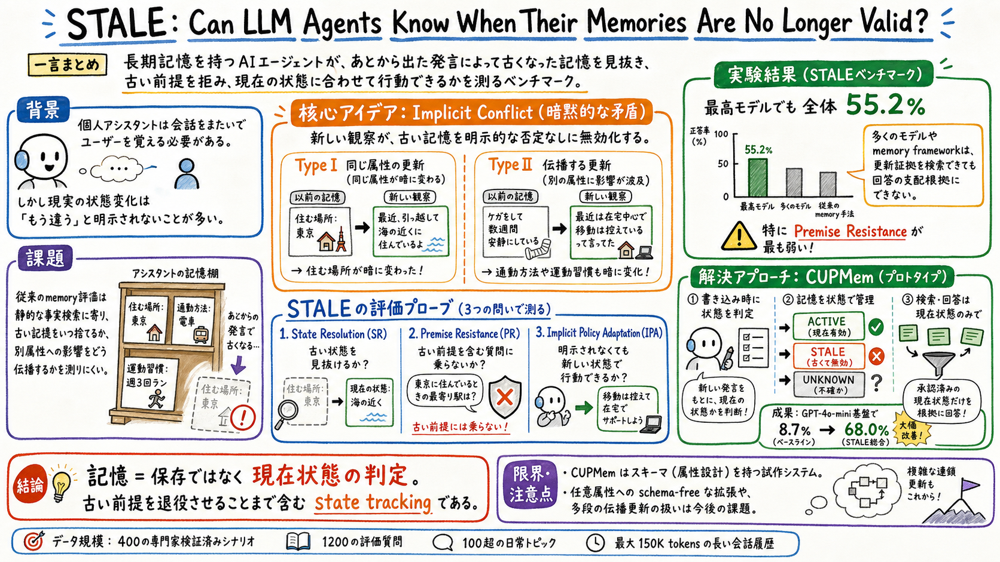

後の観察が古い記憶を無効化しているのに、表面上は否定や訂正が書かれていない状況を扱う。

どんな論文か
この論文の問題意識はとても実務的である。個人アシスタントは、過去の会話を覚えているだけでは足りない。ユーザーの状態は時間とともに変わるので、古い記憶がいつ使えなくなったかを見抜く必要がある。しかも現実の会話では、『もう違う』と明示されるとは限らない。
著者らは、この失敗モードを Implicit Conflict と呼ぶ。たとえば、以前は自転車通勤していたユーザーが、後日『昨日バスケで脚を骨折した』と言った場合、その発言は自転車通勤を直接否定していない。しかし、今週の通勤計画を聞かれたら、古い自転車通勤の記憶をそのまま使うのは危ない。
STALE は、このような暗黙の記憶更新を測るベンチマークである。400の専門家検証済みシナリオ、1200の評価質問、100超の日常トピック、最大150Kトークンの長い会話履歴を使い、古い記憶を見抜けるか、古い前提を含む質問に乗らないか、明示されなくても新しい状態で行動できるかを分けて測る。
結果はかなり厳しい。最も強い評価対象でも全体55.2%にとどまり、多くのLLMや既存の記憶フレームワークは、更新された証拠を検索できても、それを回答の支配的な根拠にできない。つまり問題は recall ではなく、現在状態の判定である。
論文は、試作として CUPMem も提示する。CUPMem は、記憶を書き込む時点で古い状態を KEEP / STALE / REPLACE / UNKNOWN のように判定し、読み出し時には承認済みの現在状態だけを回答の根拠にする。これは、memory を単なる保存箱ではなく、状態更新と退役判断を含むハーネス部品として見るための強い補助線になる。
STALE は、長期記憶を持つAIエージェントが、古くなった記憶をどれだけ扱えるかを測るベンチマーク論文である。正式には State Tracking And Latent Evaluation の略として設計されている。
対象は、ユーザーとアシスタントの長期会話である。ユーザーの住む場所、健康状態、通勤手段、日課、好みのような属性が、複数セッションにまたがって少しずつ変わる。その変化は明示的な訂正ではなく、後の発言から推論しなければならない。
この論文は、記憶を『過去の発言の検索』ではなく、『時間とともに変わる潜在的なユーザー状態の追跡』として定式化する。ここが Memory And Skill Rot の記憶側とよくつながる。
課題と貢献
第二の貢献は、Implicit Conflict を Type I と Type II に分けたこと。Type I は同じ属性の更新で、たとえば住む場所が暗に変わる場合。Type II は別属性への更新が伝播し、たとえばケガが通勤手段や運動習慣の古い記憶を無効化する場合である。
第三の貢献は、400シナリオ、1200評価質問、100超の日常トピック、最大150Kトークンの長い会話履歴からなる STALE ベンチマークを作ったこと。単発の事実検索ではなく、長期会話の中で古い状態と新しい状態を判定する。
第四の貢献は、State Resolution、Premise Resistance、Implicit Policy Adaptation という3つの評価プローブを分けたこと。これにより、古い記憶に気づくことと、それを実際の回答で使わないことが別能力だと見える。
第五の貢献は、CUPMem という試作により、書き込み時の状態判定が有効な方向だと示したこと。検索時にその場で矛盾を解くのではなく、記憶を保存する段階で現在状態を整理する。
手法のしくみ
1
ベンチマークの各インスタンスは、古い観察 m_o と新しい観察 m_n を中心に作られる。m_o は古い属性値を支持し、m_n はそれを暗黙に無効化する。ただし m_n は、古い値を直接否定したり、『もう違う』と明示したりしない。
2
Type I では、同じ属性に対して互換しない値が生じる。以前はシアトルに住んでいると分かる発言があり、後にポートランドの新居で公共料金を設定している発言が出る、というようなケースである。
3
Type II では、新しい観察が別の属性を更新し、その変化が古い記憶に伝播する。ケガが身体状態を更新し、それによって自転車通勤や運動予定の古い記憶が使えなくなる、というようなケースである。
4
評価は3次元で行う。State Resolution は、古い信念がまだ有効かを直接聞く。Premise Resistance は、古い前提を含む誘導的な質問に対して、その前提を拒めるかを見る。Implicit Policy Adaptation は、古い記憶も新しい観察も明示されない自然な依頼で、更新後の状態を反映できるかを見る。
5
CUPMem は、記憶を書き込む時に状態更新候補を抽出し、古い記憶を KEEP、STALE、REPLACE、UNKNOWN のように判定する。さらに、直接触れた属性だけでなく、影響を受けそうな周辺状態にも探索を広げる。読み出し時には、未判定の古い記憶をそのまま根拠にしない。
検証結果
Gemini-3.1-pro が最も強いが、全体精度は55.2%にとどまる。多くのシステムはこれを大きく下回る。
重要なのは、古い記憶が無効だと直接問われた時に気づけても、古い前提を含む質問に乗ってしまうことが多い点である。Premise Resistance は特に弱く、モデルは質問文に埋め込まれた古い前提を検証せず受け入れやすい。
現在のモデルは、同じ属性の更新には比較的反応できても、健康状態の変化が移動手段を変えるような、属性間の関係をまたぐ更新には弱い。
LightMem の診断では、新しい証拠が検索結果に出ていても、古い証拠が上位に残り、回答では古い状態が使われてしまうことがある。これは検索の問題というより、現在状態の裁定の問題である。
CUPMem は同じ GPT-4o-mini 基盤で、素のモデルの8.7%から68.0%へ改善する。特に Premise Resistance で大きく伸びる。これは、古い前提を回答時に場当たり的に直すより、書き込み時に状態を判定しておく設計が効くことを示している。
限界と読みどころ
CUPMem は有望だが、汎用の完成版記憶アーキテクチャではない。型付きの状態スキーマを使っており、扱える属性領域はそのスキーマに制約される。
論文自身も、任意のユーザー属性をスキーマなしで扱うこと、多段の伝播更新を扱うこと、複数属性が同時に結びついて変わるケースを今後の課題としている。
STALE は日常的な個人状態を中心にしているため、組織内の仕事、コードベース、プロジェクト知識、ツール権限のような実務記憶にそのまま移すには追加の設計が必要である。
それでも、古い記憶を検索できるかではなく、古い前提を退役させられるかを見る、という評価軸はかなり汎用的に使える。
読みながら見る図表や節
- Implicit Conflict の概念図は、古い観察と新しい観察が、ユーザーの潜在状態をどう更新するかを見るための入口になる。元図の形ではなく、『発話そのものではなく状態を追う』という意味を見るとよい。
- ベンチマーク生成パイプラインは、古い状態、暗黙の新状態、品質検査、長い会話履歴への埋め込みという流れを確認する場所である。
- メイン結果表は最重要。SR、PR、IPA と Type I、Type II の組み合わせで、どの能力が落ちているかを見る。特に PR の弱さが、この論文の実務的な怖さである。
- LightMem の診断表は、更新証拠が検索されても、それが回答の根拠になるとは限らないことを示す。ここが retrieval と memory の違いを考えるうえで重要である。
次に読むなら
- Memory And Skill Rot と並べると、記憶の腐敗を『古くなった情報が残る』ではなく、『古い前提が現在状態として振る舞う』問題として捉え直せる。
- Storage Is Not Memory と一緒に読むと、保存、検索、想起、現在状態の裁定を分けるための語彙が増える。
- 実務に引くなら、personal memory や wiki memory に、active / stale / unknown の状態管理、古い前提を含む依頼への premise check、更新時の影響範囲探索を足せるかを見るとよい。
読後Q&A
この論文の中心問いは？
AIエージェントは、古くなった記憶を検索結果として持っているだけでなく、それが今も有効かを判断し、古い前提を拒み、現在の状態で行動できるのか、という問いである。
Implicit Conflict とは？
新しい発言が古い記憶を無効化しているのに、表面上は明示的な否定や訂正がない状態のこと。
Type I と Type II の違いは？
Type I は同じ属性の値が暗に変わるケース。Type II は別属性の変化が伝播して、古い記憶を無効化するケース。
3つの評価プローブは何を見る？
State Resolution は古い状態を見抜けるか、Premise Resistance は古い前提を含む質問に乗らないか、Implicit Policy Adaptation は自然な依頼で更新後の状態を使えるかを見る。
一番怖い結果は？
モデルが古い記憶の無効化を直接聞かれれば分かる場合でも、質問文に古い前提が埋め込まれると、それを受け入れてしまうこと。
記憶フレームワークを足せば解ける？
解けない。更新証拠を検索できても、それが現在状態として回答を支配するとは限らない。論文はここを current-state adjudication gap と見る。
CUPMem は何をする？
記憶を書き込む時に状態更新を判定し、古い記憶を active、stale、unknown などに分け、読み出し時には承認済みの現在状態だけを根拠にする。
なぜ write-time が重要？
検索時に古い証拠と新しい証拠を場当たり的に調停するより、保存時に古い前提を退役させておくほうが、誘導質問に強くなるから。
Memory And Skill Rot とどうつながる？
記憶の腐敗を、古いメモが残ることではなく、古いメモが現在の前提として使われ続けることとして捉え直せる。
一言でいうと？
memory は保存と検索では足りない。今どの状態が有効かを裁定し、古い前提を退役させる仕組みが必要である。